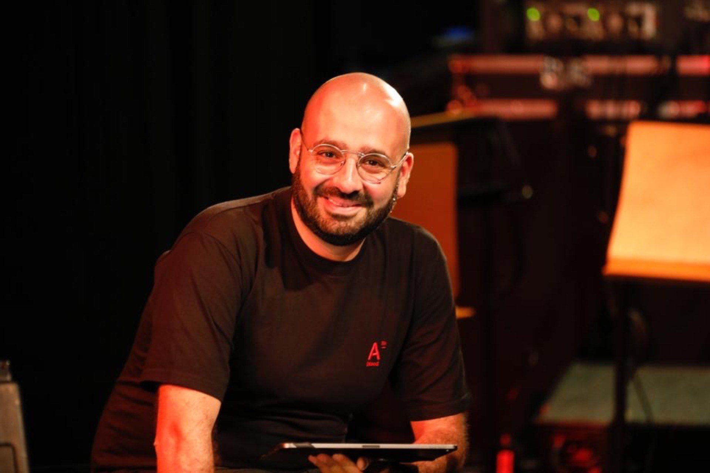
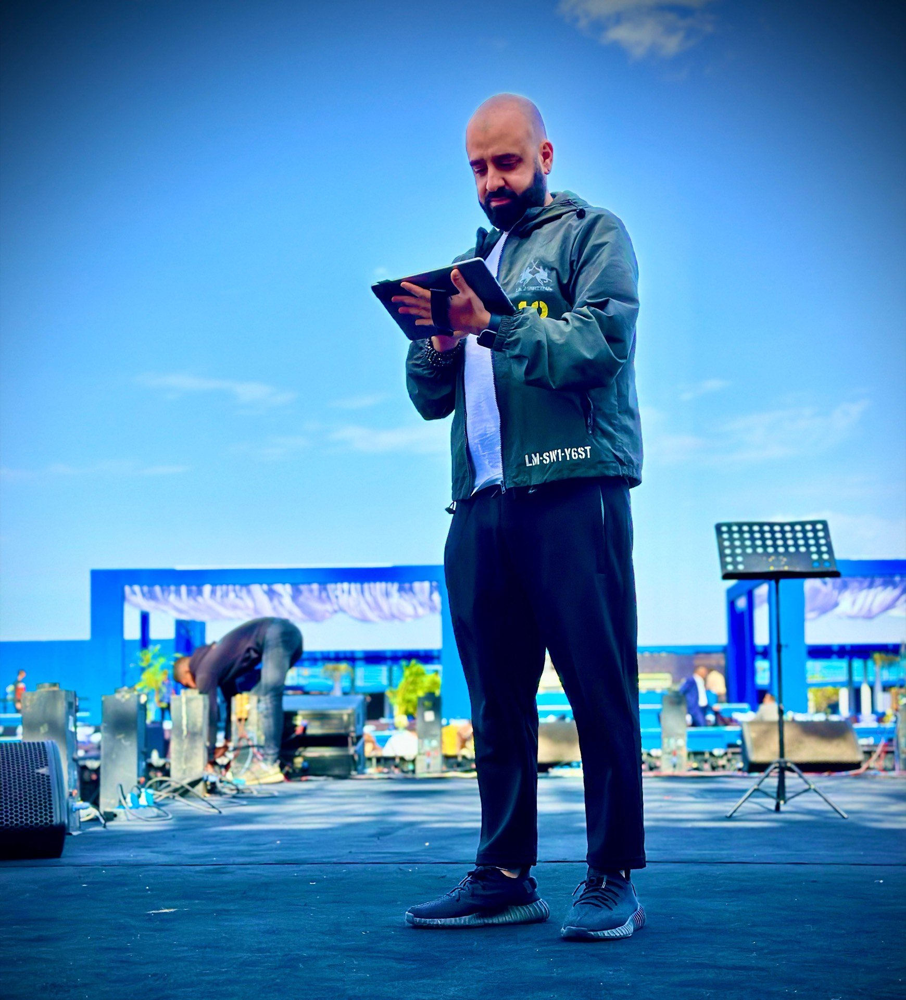
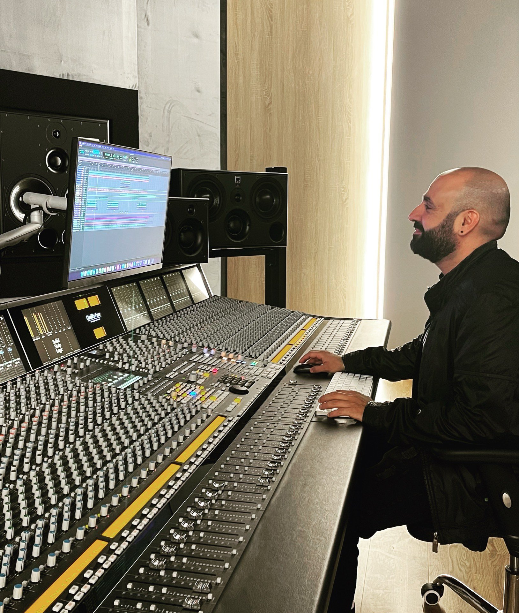

Sound Engineer · Beirut
Translating artistic vision into immersive sound — from the studio to the front of house.


About
Jean-Pierre Boutros is a live and studio mix engineer working with artists, musicians, and producers around the world. He brings a meticulous ear and steady hands to both the stage and the studio.
In 2008, he founded his own recording studio — Studio Jean-Pierre Boutros (StudioJPB) — in Jounieh, Lebanon.
His work has spanned major productions, including serving as broadcast sound engineer for a Papal Mass at the Beirut Waterfront — an event reaching an audience of over 150,000.
Beyond mixing, he has served as system integrator for leading recording facilities, including Merwas Studios in Riyadh — holder of the Guinness World Record for the world's largest music production studio — along with Playsound Studios in Lebanon and many others.
Jean-Pierre is also the founder of Zynforge Audio, a software company building tools for audio professionals — including Zynforge Live, Zynforge Recording, and Zynforge Stage.
Combining hands-on engineering experience with a developer's instinct for solving real problems, he builds and works with the tools that modern audio production depends on.
Software
A software company building tools for audio professionals — born from real engineering problems on stage and in the studio.
A live plugin host for live performance.
Multitrack and playback software for live performance.
Tools for stage plots and technical riders.

Clients
Select a name to read more.
Television
A flagship Lebanese music television program celebrating Arab vocal talent and live performance.
An Abu Dhabi TV music program uniting the Arab world's biggest singing stars in fresh musical arrangements — filmed across Lebanon, Egypt, and the UAE.
A 40-episode music documentary series travelling the globe to trace the roots of folk and ethnic music — winner of the Murex d'Or for Best Documentary.
Gallery
Contact
Available for studio sessions, mixing, mastering, and live sound engagements worldwide.